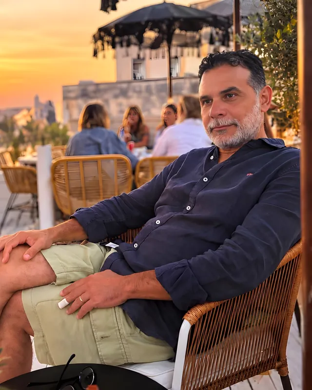

Il nostro fondatore
Massimo Provenza
Titolare · Imprenditore agricolo
Coltivatore di lavanda, olio e vino
Massimo Provenza è nato a Cefalù, tra la Rocca e il mare. Dai genitori ha imparato un amore profondo per la terra: rispettarla, seguire il ritmo delle sue stagioni e condividere ciò che dona attorno a una tavola generosa.
Da giovane è partito per vedere il mondo: il Regno Unito, Bruxelles e anni di lavoro in tutta l’Asia. Nel 2002 è tornato a casa e ha fondato Massimo Villa Collection, aprendo le porte delle più belle ville della Sicilia ai viaggiatori di tutto il mondo.
Lungo la strada si è innamorato del Sud della Francia: i suoi campi di lavanda, i suoi mercati e il suo modo gentile di vivere bene. Forse era scritto nel suo nome, perché Provenza è proprio la Provenza. Ha sognato di portare un angolo di Provenza a Cefalù, e oggi quel sogno si è realizzato.
Massimo è un imprenditore agricolo. Appena fuori Cefalù, in campagna, coltiva lavanda, ulivi e viti, si prende cura di cavalli salvati e produce il suo olio biologico, Olivum Mariae. Nel 2025 ha fatto suo anche Divino, dando ai vini e ai sapori della sua terra una casa in città.
Molti definiscono Massimo un visionario. Sogna in grande e poi insegue quei sogni con tutto il cuore, sempre per qualcosa di più grande di lui: un mondo migliore da lasciare ai suoi figli, ai loro figli e a tutti quelli nel mezzo. È altruista e generoso fino in fondo, con una gioia di vivere così grande che è impossibile non esserne contagiati. Occhio: la sua risata si sente da una parte all’altra della sala.
Da Divino sta costruendo una squadra nello stesso modo in cui cura la sua terra, con pazienza e passione. Qui non ci sono dipendenti, solo pari: persone appassionate che crescono insieme e si aiutano a diventare la versione migliore di sé.
“Siediti con Massimo per una degustazione e non sembrerà una lezione. Sembrerà ascoltare qualcuno che parla di casa.”